※本篇文章是以Claude 3.7 Sonnet的AI撰写，再由我部分增补而成。
这次去了位于宜野湾市志真志的「宫古そば なかよし」！2024年11月吃的😄
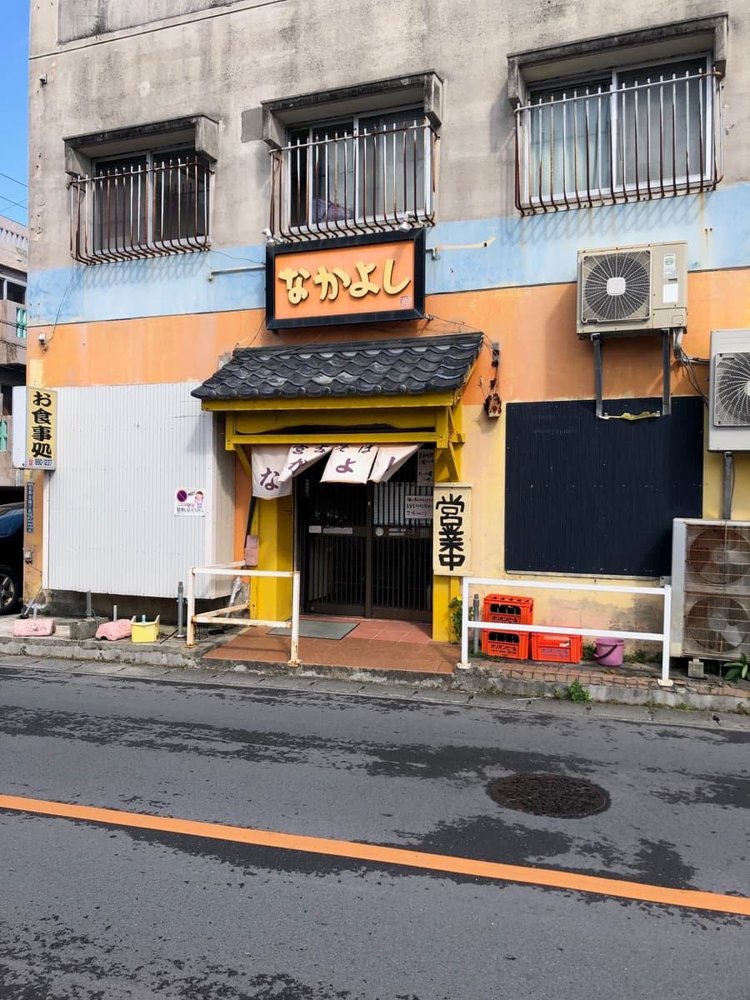
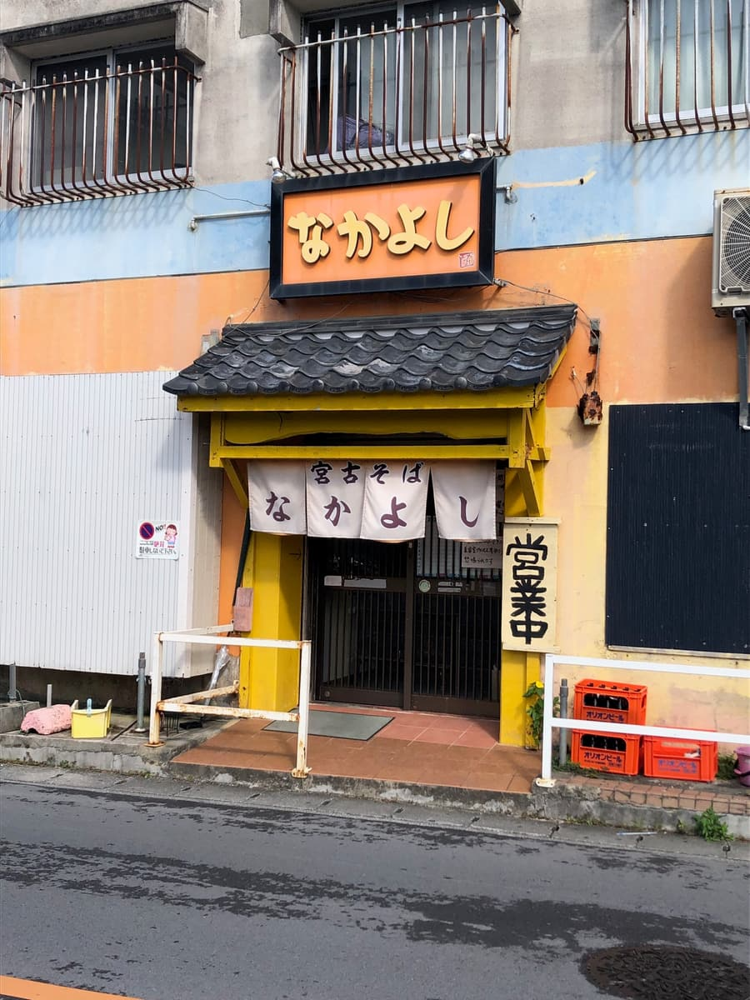
位于公寓1楼的「なかよし」，以橘色和黄色为基调的明亮外观十分吸睛。入口的暖帘上写着「宫古そば なかよし」，也挂着营业中的牌子。店门前放着啤酒箱，散发着一股令人怀念的氛围😌
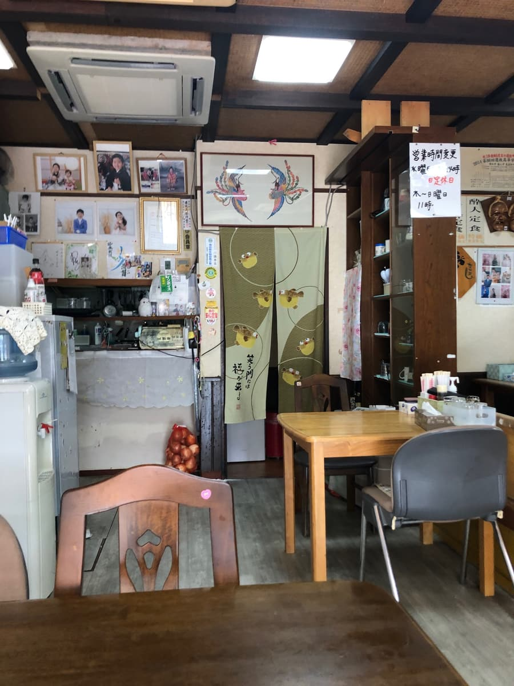
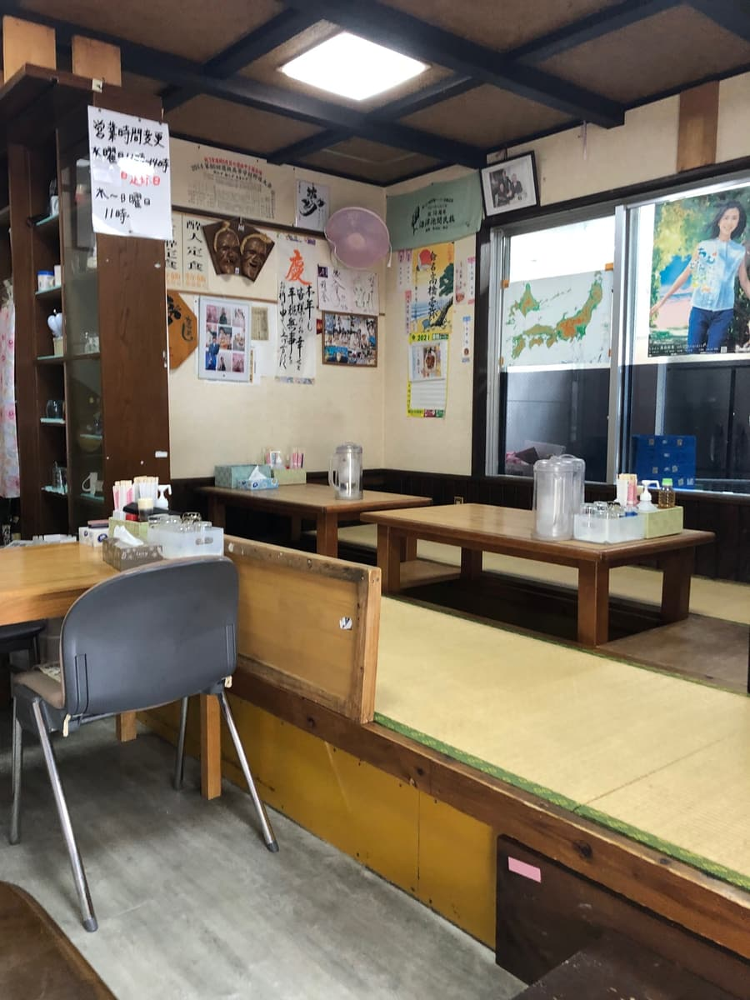
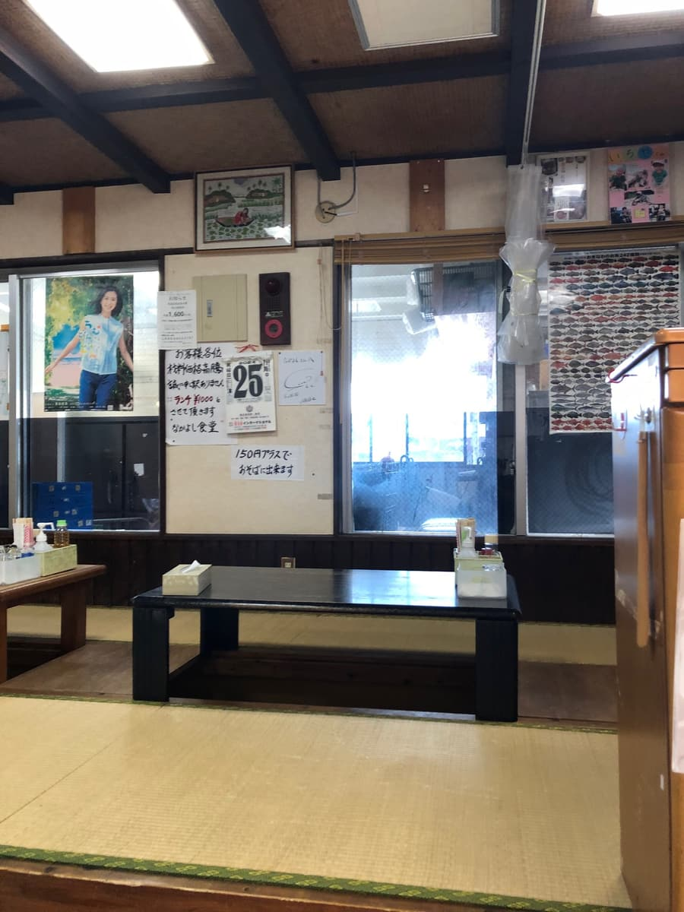
走进店里，眼前是一间充满古早味的传统食堂。墙上贴着各式各样的菜单牌，让人感受到这真的是一家长年深受在地人喜爱的店🎫 看起来是由阿嬷一个人在打理，人多的时候可能要有稍微等一下的心理准备喔。
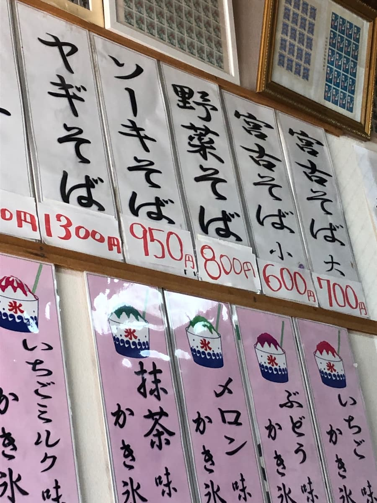
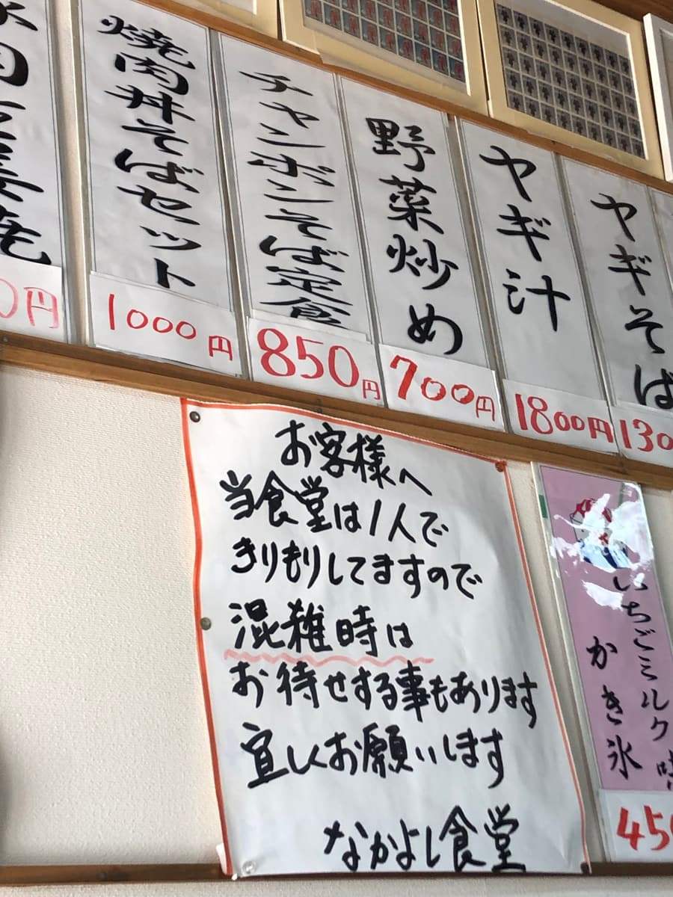
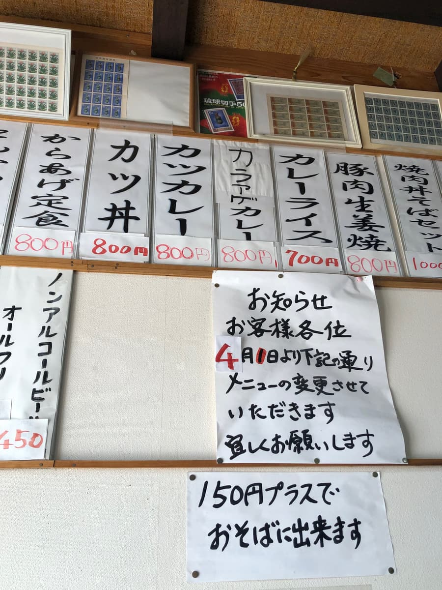
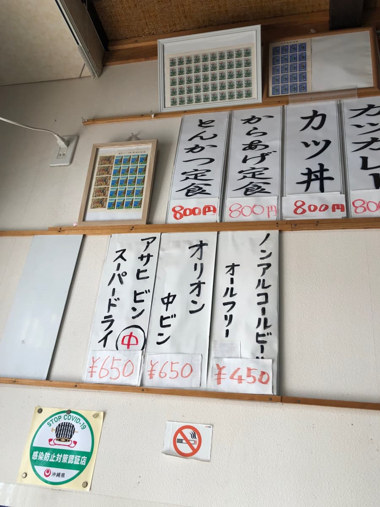
看看贴在墙上的菜单，从「羊肉面」「排骨面（ソーキそば）」「蔬菜面」等经典菜色，到「猪排咖哩」「咖哩饭」等都有，种类非常丰富。价格也落在600日圆～900多日圆，设定得相当实惠👍 这次决定点店名里也有的「宫古面」！
等了一会儿，「宫古面」送来了。乍看之下很简单，好像只有放了葱花的面而已，但这正是宫古面的特色😄 配料藏在碗底，往底下一捞，里面有三层肉和鱼板。
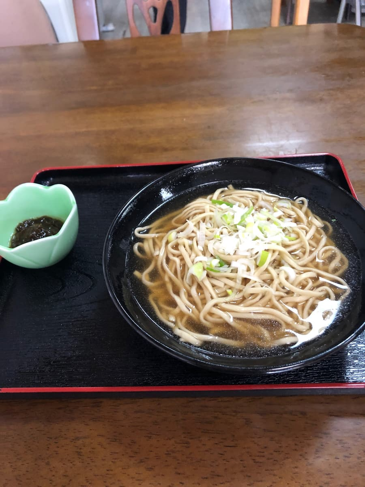
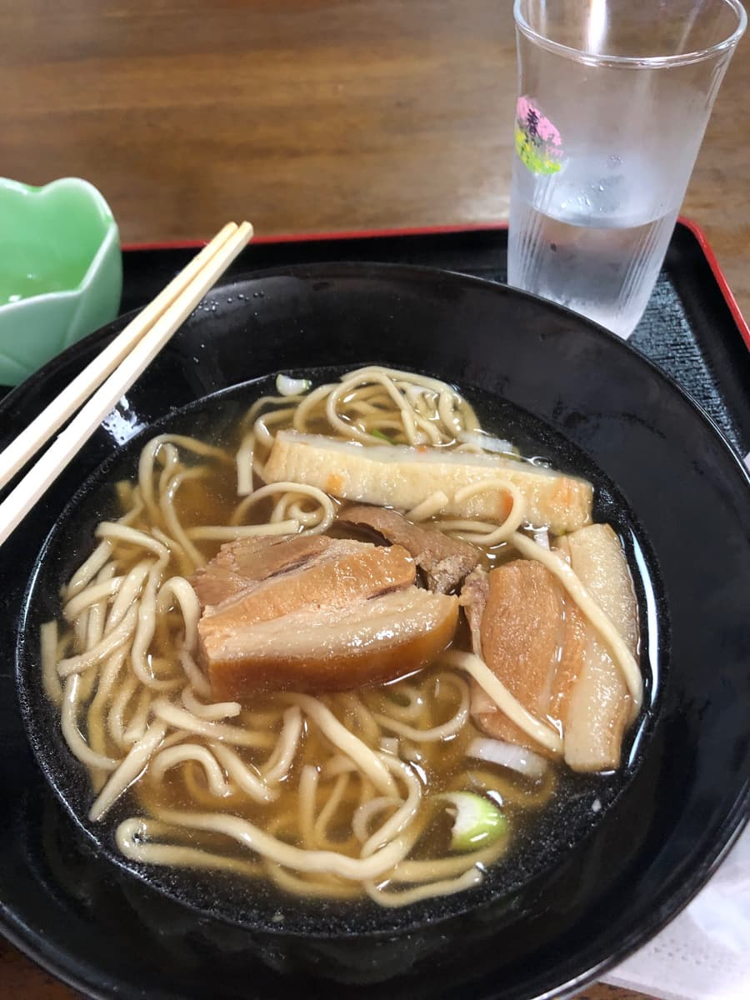
首先喝一口汤。颜色有点偏黑，看起来像「唐人そば」的汤。和一般冲绳面的柴鱼高汤或猪骨高汤印象不同。比较像是以酱油为基底、带点甜味，有种类似鸡高汤的独特风味。是汤头很独特的宫古面🤔
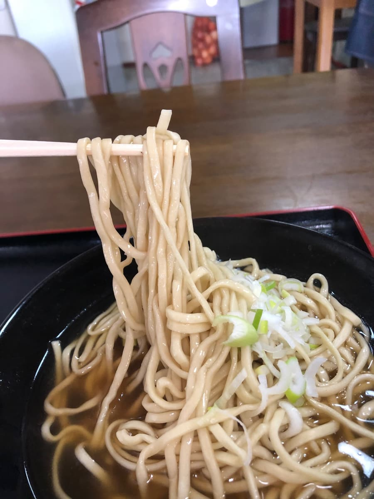
接着吃面。是宫古面特有的偏细直面，口感偏软😋 藏在碗底的三层肉很有嚼劲，筋感（口感偏韧）稍微强了一点。鱼板虽然简单，也成了不错的点缀。
我觉得这是一家能品尝到宫古面原本样貌的店。享受到了和其他店的冲绳面不一样的风味。因为是阿嬷一个人经营，人多的时候好像有点辛苦，但连同这点在内，我觉得都是一家能感受到在地味道的好店。想接触宫古饮食文化的朋友，请一定要顺道来看看😊
评分（9分/15分）：是一般好吃的感觉。大家也一定要去「宫古そば なかよし」走走喔！下次也会再介绍别家冲绳面店，敬请期待～🍜✨
面：★★★☆☆（3）
汤头：★★★☆☆（3）
配料：★★★☆☆（3）